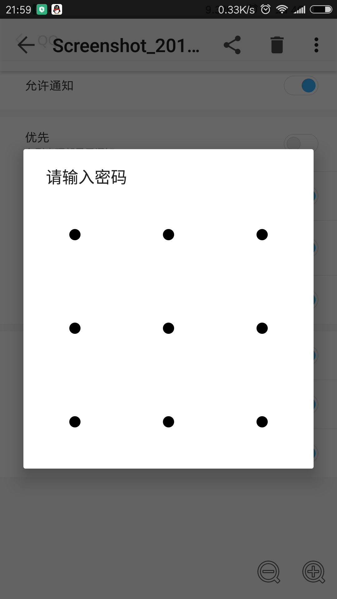
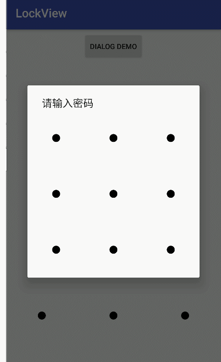

最近在用快图的时候发现了一种漂亮的Dialog,如下图所示
本以为会有现成的轮子，结果在GitHub上找半天没找到,自己写了一个，项目地址-GitHub

主要代码实现
主要的难点就是绘图,点的状态的表示，以及完成输入的回调函数
-
Point.java
点的表示
//点的信息 public float x, y; private int num; //range式半径扩大后的范围，在圆形的外接正方形内判断 public static Point isOnPoint(float x,float y,float range,Point[][] points){ for (int i=0;i<points.length;i++){ for (int j=0;j<points[i].length;j++){ if (x>=points[i][j].getX()-range && x<=points[i][j].getX()+range && y>=points[i][j].getY()-range && y<=points[i][j].getY()+range){ return points[i][j]; } } } return null; } -
LockView.java
核心view
//变量 private String input = null; private Paint paint = new Paint(Paint.ANTI_ALIAS_FLAG); private float radius = 20; private Point[][] points = null; private List<Point> points_hovered = new ArrayList<>(); private boolean action_up; private InputFinshListrner inputFinshListrner; float moveX; float moveY; //绘图 @Override protected void onDraw(Canvas canvas) { paint.setColor(Color.BLACK); //设置线的粗细 paint.setStrokeWidth(10); float x_width = canvas.getWidth() / 6; float y_height = canvas.getHeight() / 6; if (points==null){ points = new Point[3][3]; for (int i = 0; i < 3; i++) { for (int j = 0; j < 3; j++) { points[i][j] = new Point((2 * j + 1) * x_width,(2 * i + 1) * y_height,3*i+j+1); canvas.drawCircle(points[i][j].getX(), points[i][j].getY(), radius, paint); } } }else{ for (int i = 0; i < 3; i++) { for (int j = 0; j < 3; j++) { canvas.drawCircle(points[i][j].getX(), points[i][j].getY(), radius, paint); } } } int size = points_hovered.size(); //两点之间有线可以连接 if (size>=2){ for (int i=0;i<size-1;i++){ canvas.drawLine(points_hovered.get(i).getX(), points_hovered.get(i).getY(),points_hovered.get(i+1).getX(), points_hovered.get(i+1).getY(),paint); } } //跟着手指的一条线 if (size>=1){ if (!action_up){ canvas.drawLine(points_hovered.get(size-1).getX(), points_hovered.get(size-1).getY(),moveX,moveY,paint); } } //最后一个圆点要突出,同时最后抬起来时最后一个圆的要缩回去 if (size>=1) { if (action_up){ canvas.drawCircle(points_hovered.get(size-1).getX(), points_hovered.get(size-1).getY(), radius, paint); }else{ canvas.drawCircle(points_hovered.get(size-1).getX(), points_hovered.get(size-1).getY(), radius+10, paint); } } } //触摸事件 @Override public boolean onTouchEvent(MotionEvent event) { action_up = false; switch (event.getAction()) { case MotionEvent.ACTION_DOWN://按下的状态 moveX = event.getX(); moveY = event.getY(); addToHovered(Point.isOnPoint(event.getX(),event.getY(), 3*radius,points)); break; case MotionEvent.ACTION_MOVE://移动状态 moveX = event.getX(); moveY = event.getY(); addToHovered(Point.isOnPoint(event.getX(),event.getY(), 3*radius,points)); break; case MotionEvent.ACTION_UP://松开后的状态 action_up = true; StringBuilder sb = new StringBuilder(); for (Point p:points_hovered){ sb.append(String.valueOf(p.getNum())); } input = sb.toString(); //回调函数 inputFinshListrner.doAfterinput(); points_hovered.clear(); break; } //重绘,重新调用onDraw方法 postInvalidate(); return true; } //设置回调函数 public void setInputFinshListrner(InputFinshListrner inputFinshListrner){ this.inputFinshListrner = inputFinshListrner; } //手指移动到点上时要把不存在的添加进去 private void addToHovered(Point p){ if (p!=null){ for (Point pp:points_hovered){ if (pp.getNum()==p.getNum()){ return ; } } points_hovered.add(p); } } //获得手指离开后最后的输入结果 public String getInput(){ if (input==null){ return "null"; }else { return input; } } -
InputFinshListrner.java
回调接口
public interface InputFinshListrner { void doAfterinput(); } -
main.java
测试类
private void initLockView_main() { lockView_main = (LockView) findViewById(R.id.lockiew_main); lockView_main.setInputFinshListrner(new InputFinshListrner() { @Override public void doAfterinput() { Toast.makeText(mContext, lockView_main.getInput(), Toast.LENGTH_SHORT).show(); } }); } -
使用时的布局
<RelativeLayout android:layout_width="wrap_content" android:layout_height="0dp" android:layout_weight="9"> <net.tmaize.lockview.view.LockView android:id="@+id/lockiew_main" android:layout_width="match_parent" android:layout_height="wrap_content" /> </RelativeLayout> -
Demo预览

总结
主要的难点就是绘图,点的状态的表示，以及完成输入的回调函数
更多代码及Demo在项目地址-GitHub